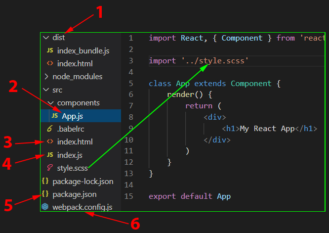

[Source (Youtube)]
|  |
1: "dist" is created when ("production" mode):
npm run build 2: "App.js", a React component
5: "package.json"
6: "webpack.config.js"
|
|
If we execute with the development's mode
npm run build
"index.js" → "App.js" ("components/App.js") → "style.scss" ("src/style.scss") → "index.html" ("src/index.html") → "Web Browser"
The part that call the "index.html" ("src/index.html") in the "webpack.config.js"
plugins: [
new HtmlWebpackPlugin({
// use our "index.html" file and insert the "index_bundle.js" in it
template: './src/index.html'
})
]